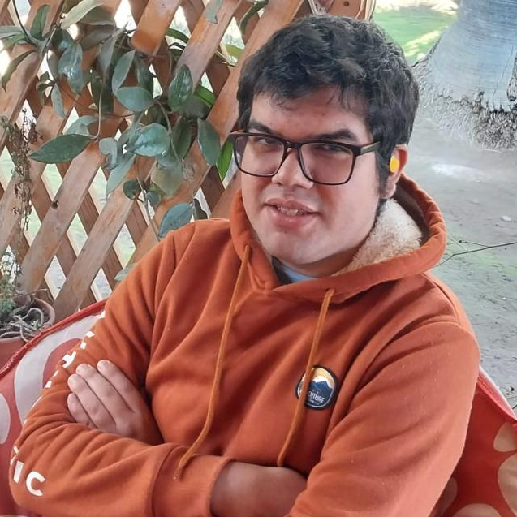

I am a PhD candidate in Physics at the Universidad de Chile, focused on the study of solar flares and their nonlinear dynamics using complex network tools.
My thesis focuses on sandpile models and complex networks to model the nonlinear dynamics of self-organized criticality systems, specifically solar flares, thereby studying energy fluctuations numerically and comparing the topology of the simulations with observations from the Solar Dynamics Observatory (SDO).
Advisors: Dr. Víctor Muñoz & Dra. Denisse Pastén
Research Group: Plasma Networks and Seismicity (PlaNetS)
Department: Departamento de Física, Facultad de Ciencias
Research Group: Plasma Networks and Seismicity (PlaNetS)
Department: Departamento de Física, Facultad de Ciencias
Research Interests
Nonlinear Dynamics
Complex Systems
Statistical Mechanics
Plasma Physics
Solar Physics
Turbulence
Chaos
Active Matter
Quantum Chaos
Self-Organized Criticality
Pattern Formation
Out-of-Equilibrium Statistical Mechanics
Special & General Relativity
Biophysics as Complex System
Social Dynamics
Knots
"We live in a complex, nonlinear universe."